Phrases overrepresented in talks
Which words and phrases are over-represented in talk abstracts compared with posters? Each phrase gets an odds ratio: how much more likely an abstract containing it is to be a talk.
Phrases are 1–3-word sequences from the abstract text. Variants of one idea that turn up in mostly the same abstracts (“massively parallel reporter”, “parallel reporter assay”, “MPRA”) are grouped under the best-scoring one, with the rest listed beneath it in small type.
Search for a phrase
The phrases in the figures below (trends, biobanks, what changed in 2026) plus the top 50 each way across all years. See how often talks and posters mention a phrase each year, then which first-author institutions and metro areas write about it (among those with at least one talk mentioning it; an abstract counts for each of its institutions). Hover or focus a row for that institution's own mention rate and odds of a talk. Searching also finds every other phrase in at least 5 talks over all years; for those the counts are exact matches in the abstract text (no titles or plurals), and there is no institution breakdown.
Odds of a talk with vs without it each year, with 95% CIs; above 1× it is more common in talks.
No institution or metro breakdown for this phrase: that is kept for the phrases listed before you search.
Odds of a talk for that institution's (or metro's) abstracts with vs without it, as for the phrase overall above: dot and 95% CI, log scale; the dashed line is 1×, no difference. Few abstracts make for wide intervals.
All years · 2022–2026
15,327 abstracts, 1,544 of them talks: a pooled talk rate of 10.1%. Odds ratios are combined across years (Mantel–Haenszel, stratified by year), so a phrase that rose or fell over time isn't credited with each year's different baseline. 16 abstracts cut off in a booklet are left out of the phrase counts.

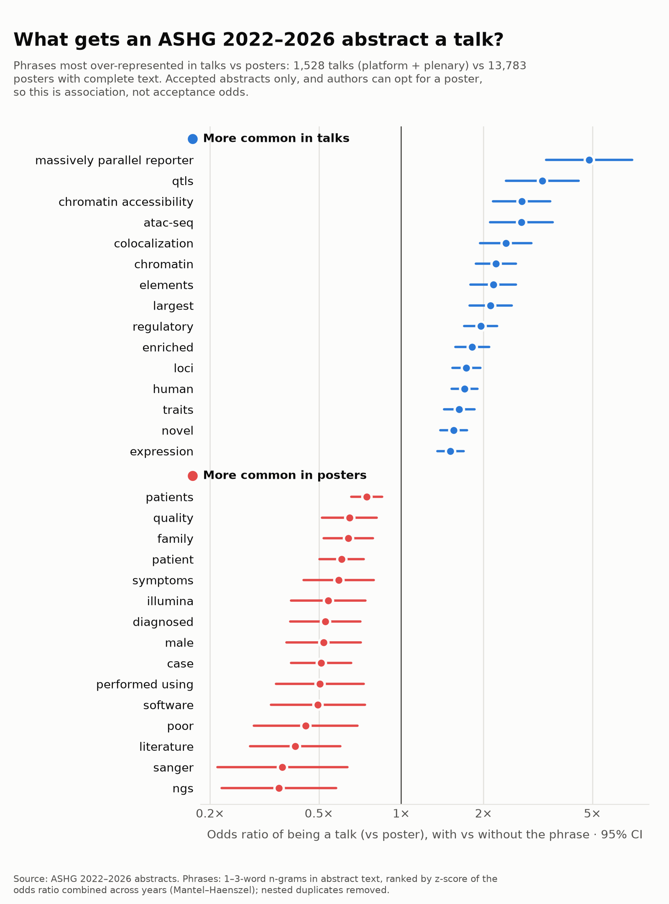
Top 30 phrases each way
More common in talks
| Phrase | Talks | Posters | Odds ratio | 95% CI |
|---|---|---|---|---|
| human | 581 | 3642 | 1.70 | 1.53–1.90 |
| regulatory | 287 | 1528 | 1.95 | 1.70–2.25 |
| chromatin | 183 | 816 | 2.22 | 1.87–2.63 |
| loci | 442 | 2651 | 1.73 | 1.54–1.95 |
| massively parallel reporter | 43 | 87 | 4.87 | 3.39–7.00 |
| largest | 165 | 756 | 2.12 | 1.78–2.53 |
| enriched | 270 | 1493 | 1.82 | 1.58–2.10 |
| chromatin accessibility | 88 | 314 | 2.76 | 2.17–3.51 |
| colocalization | 107 | 438 | 2.41 | 1.94–3.00 |
| elements | 137 | 619 | 2.17 | 1.79–2.63 |
| novel | 536 | 3533 | 1.55 | 1.39–1.74 |
| qtls | 55 | 161 | 3.28 | 2.42–4.46 |
| atac-seq | 72 | 249 | 2.75 | 2.11–3.58 |
| traits | 339 | 2071 | 1.63 | 1.43–1.86 |
| expression | 547 | 3714 | 1.51 | 1.35–1.69 |
| million | 196 | 1049 | 1.82 | 1.55–2.14 |
| gwas | 450 | 2964 | 1.52 | 1.35–1.71 |
| regulatory elements | 69 | 259 | 2.62 | 2.00–3.42 |
| type-specific | 50 | 159 | 3.08 | 2.25–4.23 |
| gwas loci | 68 | 251 | 2.61 | 1.99–3.42 |
| effects | 450 | 3031 | 1.51 | 1.34–1.70 |
| enhancer | 79 | 318 | 2.40 | 1.87–3.08 |
| disease | 846 | 6364 | 1.45 | 1.30–1.61 |
| eqtls | 90 | 384 | 2.26 | 1.79–2.86 |
| crispr | 85 | 345 | 2.32 | 1.82–2.95 |
| uk | 279 | 1676 | 1.62 | 1.41–1.86 |
| genes | 817 | 6093 | 1.44 | 1.30–1.60 |
| cell types | 179 | 984 | 1.79 | 1.51–2.11 |
| causal | 262 | 1554 | 1.63 | 1.41–1.88 |
| non-coding | 128 | 627 | 1.95 | 1.60–2.38 |
More common in posters
| Phrase | Talks | Posters | Odds ratio | 95% CI |
|---|---|---|---|---|
| patient | 129 | 1812 | 0.61 | 0.50–0.73 |
| case | 64 | 1121 | 0.51 | 0.40–0.66 |
| literature | 26 | 600 | 0.41 | 0.28–0.60 |
| patients | 322 | 3576 | 0.75 | 0.66–0.85 |
| diagnosed | 46 | 786 | 0.53 | 0.39–0.71 |
| ngs | 15 | 418 | 0.36 | 0.22–0.58 |
| family | 100 | 1356 | 0.64 | 0.52–0.79 |
| male | 40 | 712 | 0.52 | 0.38–0.71 |
| illumina | 40 | 677 | 0.54 | 0.40–0.74 |
| quality | 80 | 1108 | 0.65 | 0.51–0.81 |
| performed using | 28 | 532 | 0.50 | 0.35–0.73 |
| poor | 19 | 422 | 0.45 | 0.29–0.69 |
| sanger | 11 | 314 | 0.37 | 0.21–0.64 |
| symptoms | 46 | 706 | 0.59 | 0.44–0.79 |
| software | 24 | 449 | 0.50 | 0.33–0.74 |
| microarray | 15 | 352 | 0.43 | 0.27–0.70 |
| extracted | 28 | 503 | 0.53 | 0.36–0.76 |
| workflow | 29 | 537 | 0.53 | 0.37–0.77 |
| evaluation | 48 | 744 | 0.61 | 0.46–0.82 |
| regression | 118 | 1466 | 0.72 | 0.59–0.88 |
| logistic | 33 | 554 | 0.56 | 0.40–0.79 |
| methods | 495 | 5088 | 0.83 | 0.74–0.93 |
| background | 260 | 2891 | 0.79 | 0.69–0.91 |
| conclusions | 113 | 1411 | 0.72 | 0.59–0.88 |
| presentation | 23 | 438 | 0.51 | 0.34–0.77 |
| female | 59 | 836 | 0.65 | 0.50–0.85 |
| pcr | 17 | 358 | 0.47 | 0.30–0.75 |
| material | 4 | 207 | 0.28 | 0.13–0.61 |
| based | 292 | 3090 | 0.81 | 0.70–0.92 |
| panel | 87 | 1117 | 0.70 | 0.56–0.87 |
ASHG 2022 · Los Angeles
2,928 abstracts, 349 of them talks: a baseline talk rate of 11.9%.

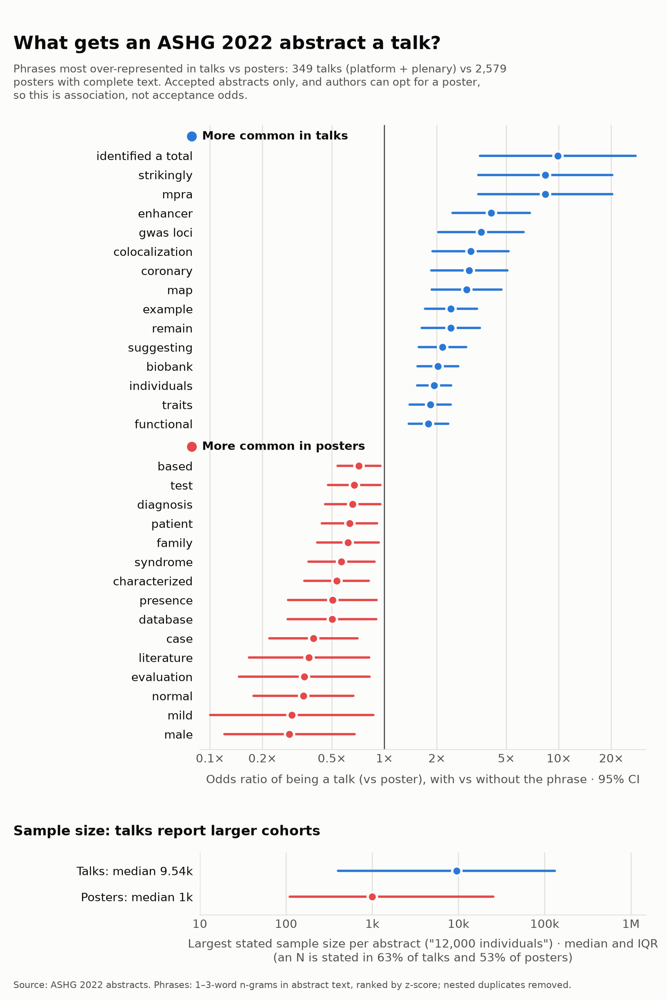
More common in talks
| Phrase | Talks | Posters | Odds ratio | 95% CI |
|---|---|---|---|---|
| individuals | 160 | 787 | 1.93 | 1.54–2.42 |
| enhancer | 23 | 44 | 4.10 | 2.46–6.85 |
| biobank | 85 | 354 | 2.03 | 1.55–2.65 |
| example | 48 | 161 | 2.41 | 1.71–3.39 |
| suggesting | 58 | 219 | 2.16 | 1.58–2.95 |
| mpra | 10 | 9 | 8.37 | 3.45–20.27 |
| strikingly | 10 | 9 | 8.37 | 3.45–20.27 |
| map | 26 | 69 | 2.96 | 1.86–4.70 |
| remain | 37 | 122 | 2.41 | 1.64–3.54 |
| gwas loci | 18 | 39 | 3.59 | 2.04–6.31 |
| colocalization | 22 | 55 | 3.12 | 1.89–5.17 |
| traits | 82 | 371 | 1.83 | 1.40–2.40 |
| coronary | 22 | 56 | 3.07 | 1.86–5.07 |
| functional | 90 | 420 | 1.79 | 1.38–2.33 |
| identified a total | 8 | 6 | 9.86 | 3.53–27.53 |
| largest | 37 | 125 | 2.35 | 1.60–3.44 |
| gwas | 108 | 537 | 1.71 | 1.33–2.18 |
| mouse | 37 | 128 | 2.29 | 1.56–3.36 |
| ancestries | 28 | 85 | 2.59 | 1.67–4.01 |
| south asian | 13 | 24 | 4.18 | 2.13–8.21 |
| loci | 97 | 474 | 1.71 | 1.33–2.21 |
| polygenic | 59 | 249 | 1.91 | 1.41–2.60 |
| regulatory | 55 | 227 | 1.95 | 1.42–2.68 |
| variants associated | 27 | 83 | 2.55 | 1.63–3.98 |
| variants | 214 | 1277 | 1.61 | 1.28–2.03 |
| profiles | 35 | 123 | 2.25 | 1.52–3.32 |
| atherosclerosis | 10 | 15 | 5.12 | 2.32–11.29 |
| conducted the largest | 6 | 2 | 19.51 | 4.52–84.26 |
| inverse | 11 | 19 | 4.46 | 2.13–9.33 |
| underlying human | 6 | 3 | 13.93 | 3.78–51.34 |
More common in posters
| Phrase | Talks | Posters | Odds ratio | 95% CI |
|---|---|---|---|---|
| normal | 9 | 193 | 0.34 | 0.18–0.67 |
| case | 12 | 222 | 0.39 | 0.22–0.70 |
| characterized | 24 | 319 | 0.53 | 0.35–0.82 |
| male | 5 | 136 | 0.29 | 0.12–0.68 |
| syndrome | 23 | 290 | 0.57 | 0.37–0.88 |
| patient | 35 | 391 | 0.63 | 0.44–0.91 |
| literature | 6 | 125 | 0.37 | 0.17–0.82 |
| evaluation | 5 | 113 | 0.35 | 0.15–0.82 |
| based | 65 | 628 | 0.71 | 0.54–0.95 |
| database | 12 | 177 | 0.50 | 0.28–0.90 |
| family | 27 | 312 | 0.62 | 0.41–0.93 |
| presence | 12 | 176 | 0.50 | 0.28–0.91 |
| diagnosis | 35 | 377 | 0.66 | 0.46–0.95 |
| test | 39 | 410 | 0.67 | 0.47–0.95 |
| mild | 3 | 85 | 0.29 | 0.10–0.86 |
| preliminary | 6 | 115 | 0.40 | 0.18–0.90 |
| order | 8 | 134 | 0.45 | 0.22–0.91 |
| background | 45 | 457 | 0.69 | 0.50–0.96 |
| quality | 17 | 217 | 0.57 | 0.35–0.94 |
| ngs | 5 | 101 | 0.39 | 0.16–0.93 |
| sanger | 2 | 71 | 0.25 | 0.07–0.90 |
| dna | 46 | 461 | 0.70 | 0.51–0.97 |
| collected | 13 | 177 | 0.54 | 0.31–0.96 |
| characteristics | 4 | 90 | 0.36 | 0.14–0.93 |
| main | 5 | 100 | 0.39 | 0.17–0.94 |
| rna | 22 | 256 | 0.62 | 0.40–0.97 |
| pcr | 3 | 78 | 0.32 | 0.11–0.94 |
| years | 32 | 339 | 0.68 | 0.46–0.99 |
| proposed | 7 | 116 | 0.46 | 0.22–0.98 |
| genotype | 20 | 234 | 0.62 | 0.39–0.99 |
ASHG 2023 · Washington, DC
3,330 abstracts, 341 of them talks: a baseline talk rate of 10.2%.

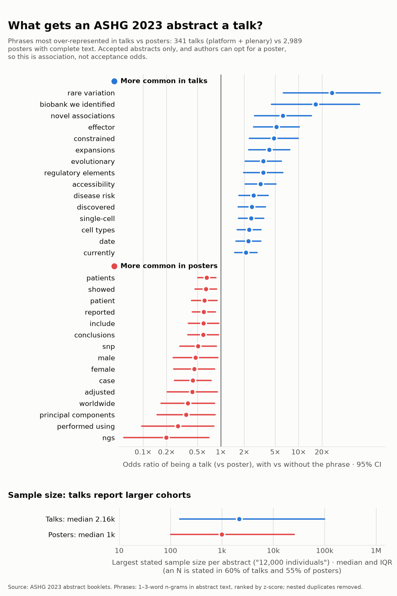
More common in talks
| Phrase | Talks | Posters | Odds ratio | 95% CI |
|---|---|---|---|---|
| accessibility | 26 | 75 | 3.24 | 2.05–5.12 |
| effector | 13 | 23 | 5.19 | 2.63–10.23 |
| single-cell | 38 | 147 | 2.44 | 1.68–3.55 |
| cell types | 43 | 177 | 2.31 | 1.62–3.29 |
| evolutionary | 19 | 50 | 3.52 | 2.06–6.01 |
| expansions | 15 | 33 | 4.19 | 2.27–7.73 |
| rare variation | 7 | 2 | 26.79 | 6.38–112.60 |
| discovered | 32 | 120 | 2.50 | 1.67–3.75 |
| disease risk | 28 | 99 | 2.64 | 1.71–4.07 |
| currently | 49 | 223 | 2.10 | 1.50–2.92 |
| date | 39 | 163 | 2.26 | 1.56–3.26 |
| novel associations | 9 | 13 | 6.30 | 2.73–14.56 |
| regulatory elements | 16 | 42 | 3.52 | 1.97–6.28 |
| constrained | 11 | 21 | 4.80 | 2.33–9.92 |
| biobank we identified | 6 | 3 | 16.53 | 4.49–60.92 |
| systematically | 19 | 57 | 3.08 | 1.82–5.22 |
| chromatin | 39 | 168 | 2.19 | 1.52–3.15 |
| neurons | 29 | 110 | 2.46 | 1.61–3.75 |
| vivo | 19 | 58 | 3.03 | 1.79–5.12 |
| protein abundance | 7 | 8 | 7.87 | 2.93–21.13 |
| abundance | 18 | 55 | 3.02 | 1.76–5.18 |
| noncoding regions | 8 | 12 | 6.07 | 2.52–14.62 |
| t2d risk | 8 | 12 | 6.07 | 2.52–14.62 |
| ultra-rare | 9 | 16 | 5.15 | 2.30–11.53 |
| dose | 11 | 24 | 4.21 | 2.07–8.56 |
| repeat | 25 | 93 | 2.50 | 1.59–3.93 |
| probabilistic | 8 | 13 | 5.62 | 2.37–13.35 |
| apply | 22 | 78 | 2.61 | 1.61–4.23 |
| sc-eqtl | 5 | 3 | 13.95 | 3.63–53.53 |
| rare variants | 32 | 137 | 2.18 | 1.46–3.25 |
More common in posters
| Phrase | Talks | Posters | Odds ratio | 95% CI |
|---|---|---|---|---|
| patients | 75 | 898 | 0.66 | 0.50–0.86 |
| case | 14 | 275 | 0.44 | 0.25–0.75 |
| reported | 40 | 544 | 0.60 | 0.43–0.85 |
| showed | 47 | 599 | 0.64 | 0.47–0.89 |
| female | 11 | 212 | 0.45 | 0.25–0.83 |
| patient | 32 | 436 | 0.61 | 0.42–0.89 |
| ngs | 2 | 106 | 0.20 | 0.06–0.70 |
| snp | 14 | 238 | 0.51 | 0.30–0.88 |
| worldwide | 6 | 146 | 0.38 | 0.17–0.83 |
| principal components | 5 | 130 | 0.36 | 0.15–0.85 |
| performed using | 3 | 106 | 0.28 | 0.10–0.82 |
| conclusions | 21 | 303 | 0.59 | 0.38–0.93 |
| adjusted | 7 | 148 | 0.43 | 0.20–0.90 |
| male | 9 | 170 | 0.47 | 0.24–0.92 |
| include | 21 | 300 | 0.60 | 0.38–0.94 |
| factors | 47 | 559 | 0.70 | 0.51–0.96 |
| recruited | 4 | 109 | 0.35 | 0.14–0.91 |
| developmental delay | 6 | 131 | 0.42 | 0.19–0.93 |
| regulated | 1 | 74 | 0.17 | 0.03–0.87 |
| aim | 14 | 220 | 0.56 | 0.32–0.96 |
| diagnosed | 12 | 197 | 0.54 | 0.30–0.96 |
| remaining | 4 | 104 | 0.37 | 0.14–0.95 |
| described | 7 | 138 | 0.46 | 0.22–0.97 |
| polymorphism | 1 | 67 | 0.19 | 0.04–0.97 |
| false | 5 | 113 | 0.41 | 0.17–0.98 |
| status | 16 | 235 | 0.59 | 0.36–0.99 |
| moderate | 2 | 77 | 0.28 | 0.08–0.98 |
| biallelic | 2 | 76 | 0.28 | 0.08–0.99 |
| illumina | 10 | 168 | 0.53 | 0.28–1.00 |
| subjects | 8 | 145 | 0.50 | 0.25–1.00 |
ASHG 2024 · Denver
2,950 abstracts, 339 of them talks: a baseline talk rate of 11.5%.

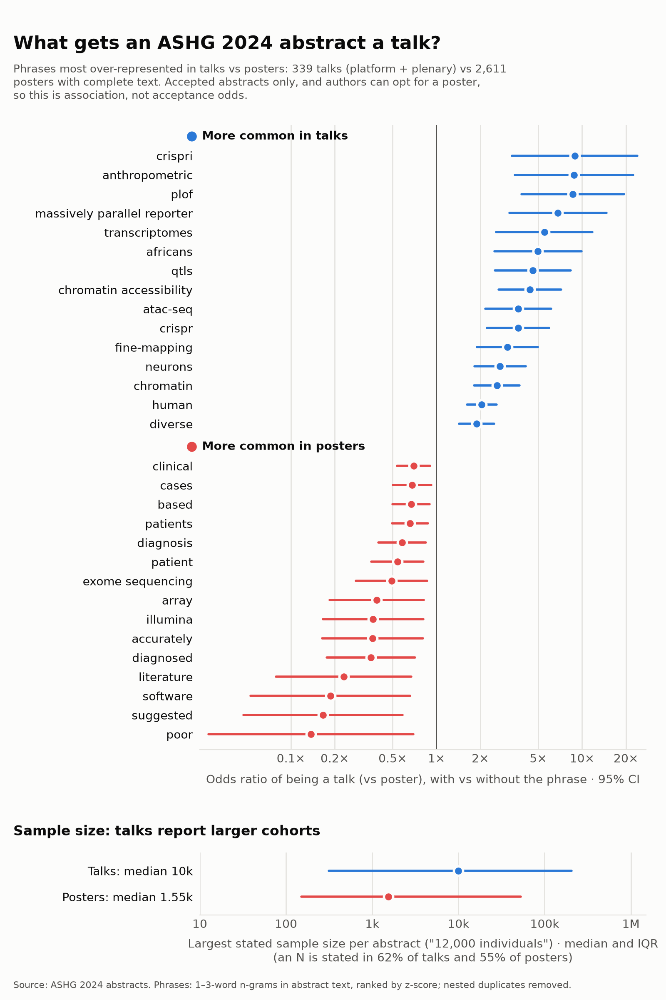
More common in talks
| Phrase | Talks | Posters | Odds ratio | 95% CI |
|---|---|---|---|---|
| human | 141 | 674 | 2.05 | 1.62–2.58 |
| chromatin accessibility | 25 | 47 | 4.38 | 2.67–7.18 |
| plof | 12 | 11 | 8.63 | 3.84–19.38 |
| chromatin | 43 | 139 | 2.60 | 1.81–3.73 |
| crispr | 24 | 54 | 3.64 | 2.23–5.95 |
| qtls | 17 | 30 | 4.59 | 2.52–8.36 |
| massively parallel reporter | 12 | 14 | 6.84 | 3.18–14.70 |
| neurons | 34 | 103 | 2.74 | 1.83–4.10 |
| atac-seq | 21 | 47 | 3.65 | 2.16–6.15 |
| fine-mapping | 24 | 64 | 3.07 | 1.90–4.96 |
| anthropometric | 9 | 8 | 8.80 | 3.46–22.37 |
| africans | 13 | 21 | 4.98 | 2.50–9.94 |
| diverse | 77 | 353 | 1.89 | 1.43–2.49 |
| transcriptomes | 11 | 16 | 5.51 | 2.57–11.79 |
| crispri | 8 | 7 | 8.90 | 3.31–23.93 |
| postmortem | 12 | 21 | 4.60 | 2.27–9.32 |
| genetic ancestry groups | 7 | 5 | 10.69 | 3.54–32.31 |
| missed | 19 | 49 | 3.15 | 1.84–5.39 |
| ancestry groups | 14 | 29 | 3.90 | 2.06–7.39 |
| uk | 74 | 349 | 1.82 | 1.37–2.40 |
| traits | 80 | 389 | 1.77 | 1.35–2.32 |
| asians | 13 | 26 | 4.03 | 2.07–7.85 |
| largest | 37 | 138 | 2.21 | 1.51–3.24 |
| regions | 84 | 415 | 1.75 | 1.34–2.28 |
| regulatory | 57 | 251 | 1.91 | 1.40–2.61 |
| finally | 46 | 188 | 2.04 | 1.45–2.87 |
| putative | 28 | 94 | 2.44 | 1.58–3.77 |
| cells | 92 | 471 | 1.70 | 1.31–2.20 |
| causal variant | 11 | 20 | 4.42 | 2.13–9.19 |
| consistent | 53 | 232 | 1.91 | 1.39–2.64 |
More common in posters
| Phrase | Talks | Posters | Odds ratio | 95% CI |
|---|---|---|---|---|
| patient | 26 | 353 | 0.54 | 0.36–0.82 |
| diagnosed | 8 | 176 | 0.35 | 0.18–0.71 |
| patients | 65 | 694 | 0.66 | 0.50–0.87 |
| diagnosis | 32 | 401 | 0.58 | 0.40–0.85 |
| suggested | 2 | 111 | 0.17 | 0.05–0.58 |
| clinical | 83 | 831 | 0.70 | 0.54–0.90 |
| based | 60 | 637 | 0.67 | 0.50–0.90 |
| literature | 3 | 112 | 0.23 | 0.08–0.67 |
| software | 2 | 99 | 0.19 | 0.05–0.66 |
| array | 7 | 143 | 0.39 | 0.18–0.82 |
| accurately | 6 | 132 | 0.36 | 0.16–0.81 |
| cases | 54 | 572 | 0.68 | 0.50–0.92 |
| exome sequencing | 13 | 202 | 0.49 | 0.28–0.86 |
| illumina | 6 | 131 | 0.37 | 0.17–0.81 |
| poor | 1 | 81 | 0.14 | 0.03–0.69 |
| genetic factors | 4 | 107 | 0.31 | 0.12–0.81 |
| control | 29 | 347 | 0.62 | 0.42–0.92 |
| tools | 15 | 214 | 0.53 | 0.31–0.91 |
| likely pathogenic | 6 | 124 | 0.39 | 0.18–0.86 |
| management | 8 | 143 | 0.44 | 0.22–0.89 |
| subjects | 5 | 111 | 0.37 | 0.16–0.87 |
| identification | 17 | 228 | 0.57 | 0.34–0.93 |
| panel | 15 | 209 | 0.55 | 0.32–0.93 |
| microarray | 1 | 69 | 0.16 | 0.03–0.82 |
| commonly | 6 | 117 | 0.41 | 0.19–0.92 |
| university | 2 | 73 | 0.26 | 0.07–0.91 |
| experience | 3 | 82 | 0.32 | 0.11–0.94 |
| female | 10 | 153 | 0.51 | 0.27–0.96 |
| use | 41 | 433 | 0.70 | 0.50–0.98 |
| tumor | 6 | 111 | 0.44 | 0.20–0.97 |
ASHG 2025 · Boston
3,154 abstracts, 263 of them talks: a baseline talk rate of 8.3%. 16 abstracts are cut off mid-text in the booklet itself; they are left out of the phrase counts.

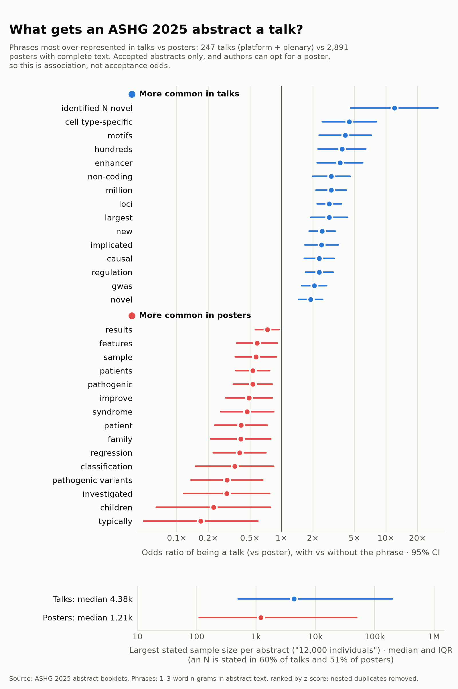
More common in talks
| Phrase | Talks | Posters | Odds ratio | 95% CI |
|---|---|---|---|---|
| loci | 101 | 561 | 2.88 | 2.20–3.77 |
| million | 51 | 232 | 3.00 | 2.15–4.19 |
| new | 76 | 444 | 2.46 | 1.84–3.27 |
| regulation | 62 | 368 | 2.31 | 1.70–3.14 |
| non-coding | 31 | 133 | 3.01 | 1.99–4.54 |
| gwas | 89 | 620 | 2.07 | 1.57–2.72 |
| largest | 32 | 144 | 2.87 | 1.91–4.30 |
| identified N novel | 8 | 8 | 12.04 | 4.61–31.44 |
| enhancer | 21 | 73 | 3.64 | 2.21–6.00 |
| causal | 52 | 301 | 2.31 | 1.66–3.20 |
| hundreds | 19 | 63 | 3.80 | 2.25–6.43 |
| cell type-specific | 15 | 42 | 4.47 | 2.46–8.12 |
| motifs | 16 | 49 | 4.09 | 2.31–7.26 |
| novel | 102 | 781 | 1.90 | 1.46–2.48 |
| implicated | 39 | 209 | 2.43 | 1.68–3.50 |
| reporter assay mpra | 6 | 4 | 17.27 | 5.16–57.86 |
| non-coding variants | 11 | 26 | 5.26 | 2.60–10.64 |
| causal genes | 12 | 31 | 4.82 | 2.47–9.41 |
| regulatory | 61 | 399 | 2.06 | 1.51–2.80 |
| cis-regulatory | 16 | 53 | 3.78 | 2.14–6.67 |
| genes involved | 18 | 65 | 3.48 | 2.04–5.93 |
| revealing | 24 | 105 | 2.90 | 1.83–4.59 |
| elements | 31 | 155 | 2.56 | 1.70–3.85 |
| risk loci | 18 | 67 | 3.37 | 1.98–5.74 |
| driver genes | 6 | 6 | 11.95 | 4.00–35.72 |
| expression | 104 | 830 | 1.81 | 1.39–2.35 |
| crispr | 17 | 63 | 3.38 | 1.96–5.84 |
| bowel disease ibd | 7 | 11 | 7.81 | 3.08–19.78 |
| pinpointed | 6 | 7 | 10.35 | 3.59–29.83 |
| convergent | 9 | 20 | 5.58 | 2.56–12.18 |
More common in posters
| Phrase | Talks | Posters | Odds ratio | 95% CI |
|---|---|---|---|---|
| patients | 34 | 672 | 0.53 | 0.37–0.77 |
| regression | 12 | 339 | 0.40 | 0.22–0.71 |
| patient | 12 | 329 | 0.41 | 0.23–0.74 |
| pathogenic variants | 6 | 236 | 0.30 | 0.14–0.67 |
| typically | 2 | 163 | 0.17 | 0.05–0.60 |
| improve | 16 | 365 | 0.49 | 0.30–0.82 |
| family | 9 | 256 | 0.41 | 0.21–0.79 |
| syndrome | 12 | 292 | 0.47 | 0.26–0.84 |
| investigated | 4 | 167 | 0.30 | 0.12–0.77 |
| sample | 21 | 411 | 0.57 | 0.36–0.90 |
| features | 22 | 420 | 0.59 | 0.38–0.92 |
| classification | 5 | 172 | 0.36 | 0.15–0.84 |
| children | 2 | 125 | 0.22 | 0.06–0.79 |
| results | 105 | 1451 | 0.73 | 0.57–0.95 |
| literature | 2 | 123 | 0.23 | 0.06–0.80 |
| calculated | 2 | 122 | 0.23 | 0.07–0.81 |
| autosomal | 7 | 193 | 0.43 | 0.21–0.91 |
| initial | 0 | 120 | 0.05 | 0.00–0.75 |
| increasing | 5 | 159 | 0.39 | 0.16–0.92 |
| group | 9 | 219 | 0.48 | 0.25–0.94 |
| overlap | 5 | 158 | 0.39 | 0.17–0.92 |
| approach | 40 | 641 | 0.68 | 0.48–0.97 |
| management | 5 | 157 | 0.39 | 0.17–0.93 |
| age | 37 | 595 | 0.69 | 0.48–0.98 |
| variant | 64 | 935 | 0.74 | 0.55–0.99 |
| polygenic | 18 | 341 | 0.60 | 0.37–0.98 |
| developmental | 12 | 256 | 0.55 | 0.30–0.98 |
| symptoms | 5 | 151 | 0.41 | 0.17–0.97 |
| recessive | 4 | 135 | 0.38 | 0.15–0.97 |
| logistic | 3 | 119 | 0.33 | 0.11–0.97 |
ASHG 2026 · Montreal
2,965 abstracts, 252 of them talks: a baseline talk rate of 8.5%.

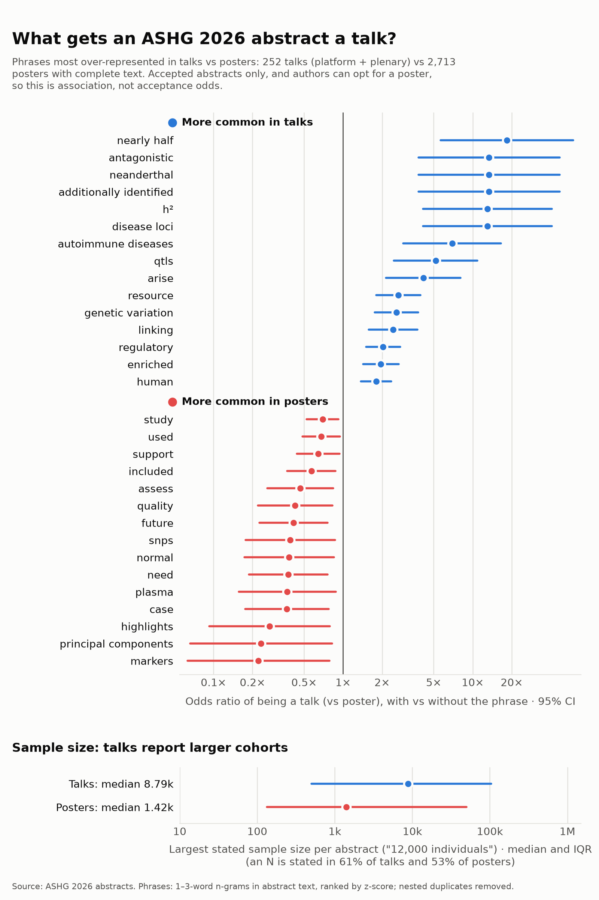
More common in talks
| Phrase | Talks | Posters | Odds ratio | 95% CI |
|---|---|---|---|---|
| resource | 34 | 151 | 2.67 | 1.80–3.96 |
| nearly half | 7 | 4 | 18.39 | 5.67–59.62 |
| genetic variation | 36 | 166 | 2.58 | 1.76–3.79 |
| regulatory | 64 | 390 | 2.04 | 1.50–2.75 |
| disease loci | 6 | 5 | 12.99 | 4.14–40.73 |
| h² | 6 | 5 | 12.99 | 4.14–40.73 |
| autoimmune diseases | 8 | 13 | 6.95 | 2.92–16.57 |
| qtls | 10 | 22 | 5.18 | 2.46–10.90 |
| human | 95 | 683 | 1.80 | 1.38–2.36 |
| arise | 12 | 33 | 4.16 | 2.14–8.07 |
| enriched | 57 | 354 | 1.96 | 1.43–2.68 |
| additionally identified | 5 | 4 | 13.38 | 3.82–46.82 |
| neanderthal | 5 | 4 | 13.38 | 3.82–46.82 |
| antagonistic | 5 | 4 | 13.38 | 3.82–46.82 |
| linking | 27 | 129 | 2.43 | 1.58–3.75 |
| traits | 61 | 397 | 1.87 | 1.38–2.54 |
| rare damaging | 5 | 5 | 10.94 | 3.33–35.94 |
| informs | 5 | 5 | 10.94 | 3.33–35.94 |
| origins | 7 | 13 | 6.11 | 2.48–15.06 |
| opposite | 9 | 23 | 4.47 | 2.08–9.60 |
| nearly | 18 | 74 | 2.79 | 1.65–4.73 |
| exists | 7 | 14 | 5.69 | 2.33–13.87 |
| identified pathogenic | 5 | 6 | 9.26 | 2.95–29.03 |
| human genetic variation | 5 | 6 | 9.26 | 2.95–29.03 |
| chromatin states | 5 | 6 | 9.26 | 2.95–29.03 |
| kinnex | 5 | 6 | 9.26 | 2.95–29.03 |
| novel | 76 | 541 | 1.74 | 1.31–2.31 |
| large | 56 | 365 | 1.85 | 1.35–2.53 |
| consequences | 24 | 116 | 2.39 | 1.51–3.77 |
| systematic identification | 5 | 7 | 8.02 | 2.65–24.28 |
More common in posters
| Phrase | Talks | Posters | Odds ratio | 95% CI |
|---|---|---|---|---|
| future | 11 | 279 | 0.41 | 0.23–0.76 |
| need | 8 | 228 | 0.38 | 0.19–0.76 |
| case | 7 | 207 | 0.37 | 0.18–0.77 |
| included | 24 | 429 | 0.57 | 0.37–0.88 |
| assess | 12 | 271 | 0.47 | 0.26–0.84 |
| quality | 9 | 227 | 0.43 | 0.22–0.83 |
| study | 73 | 1005 | 0.70 | 0.52–0.92 |
| highlights | 3 | 133 | 0.27 | 0.09–0.79 |
| normal | 6 | 174 | 0.38 | 0.17–0.85 |
| markers | 2 | 116 | 0.22 | 0.06–0.78 |
| snps | 6 | 171 | 0.39 | 0.18–0.86 |
| support | 33 | 520 | 0.64 | 0.44–0.94 |
| used | 45 | 663 | 0.68 | 0.49–0.94 |
| principal components | 2 | 111 | 0.23 | 0.07–0.82 |
| plasma | 5 | 153 | 0.37 | 0.16–0.88 |
| low | 10 | 223 | 0.48 | 0.26–0.91 |
| body | 4 | 137 | 0.34 | 0.13–0.88 |
| compared | 43 | 625 | 0.69 | 0.49–0.97 |
| illumina | 4 | 130 | 0.36 | 0.14–0.93 |
| extracted | 1 | 86 | 0.18 | 0.04–0.91 |
| population-specific | 2 | 98 | 0.27 | 0.08–0.94 |
| investigated | 6 | 154 | 0.44 | 0.20–0.97 |
| significantly associated | 2 | 96 | 0.27 | 0.08–0.96 |
| platforms | 1 | 83 | 0.19 | 0.04–0.95 |
| essential | 11 | 221 | 0.54 | 0.29–0.98 |
| suggest | 20 | 337 | 0.62 | 0.39–0.99 |
| methods | 81 | 1044 | 0.76 | 0.58–1.00 |
| conducted | 22 | 356 | 0.65 | 0.41–1.01 |
| conclusion | 35 | 514 | 0.70 | 0.48–1.01 |
| review | 6 | 147 | 0.46 | 0.21–1.02 |
Phrase trends
Year by year, 2022–2026: the share of talks and of posters mentioning selected phrases. For any other phrase, and who writes about it, look it up above.
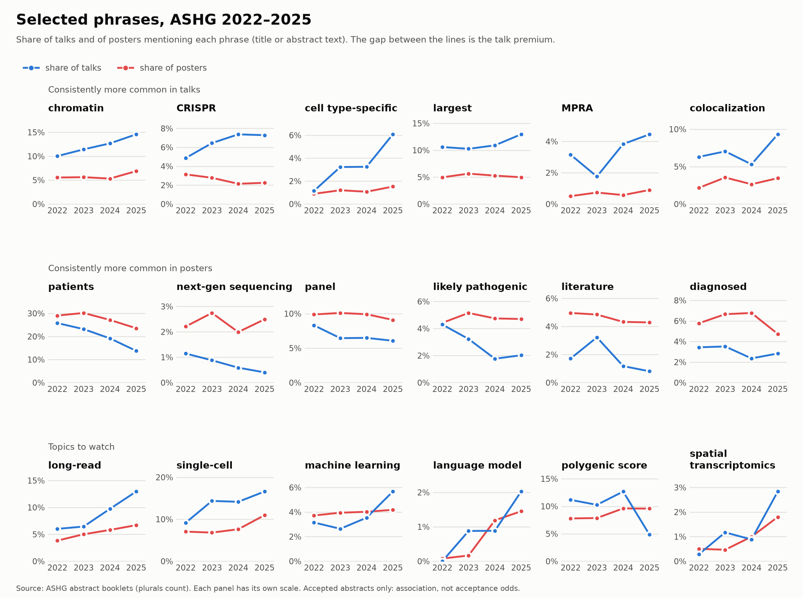
Biobanks
How often abstracts mention the most-cited biobanks, 2022–2026, counting common acronyms (UKB, MVP, BBJ). UK Biobank is in about one abstract in eight every year; All of Us grew six-fold. To compare talks with posters for any of them, look it up above.
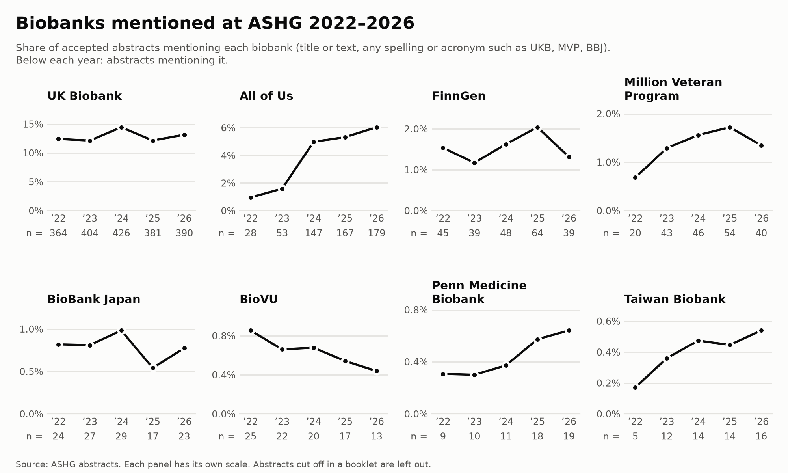
What changed in 2026
Clinical vocabulary stopped leaning toward posters. “Patients”, “likely pathogenic” and “diagnosis” leaned toward posters over 2022–2025 (pooled odds ratios 0.6–0.8); in 2026 all three were at least as common in talks. Scanning every phrase for the largest 2026 shifts turns up more of the same: “idiopathic”, “genetic disease” and “therapy”. Click one to look it up.
Suggestive, not established. The top row was chosen before looking at 2026; the bottom row was picked for having the largest shifts, so its p-values overstate the evidence. Across all ~10,800 phrases tested, no single shift survives a false-discovery-rate correction.
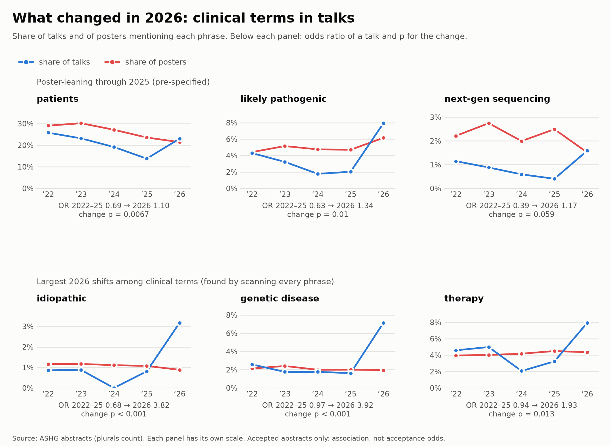
Sample size
Talks report larger cohorts than posters, every year: the largest human-subject sample size each abstract states (“12,000 individuals”, “N = 450”); the bars span the middle half of abstracts that state one.
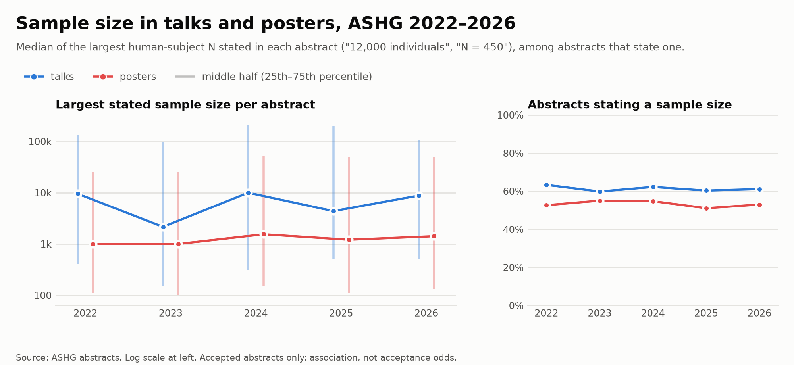
Words, A to Z
Every word in at least 10 abstracts, in alphabetical order, by the share of abstracts using it. Common English words (“the”, “of”) are left out; forms of one word (“remain”, “remains”) sit side by side and form towers, and the top of each tower is labelled. Hover a point for its word. The year buttons at the top of the page switch years; words keep their place and the scale is the same every year.
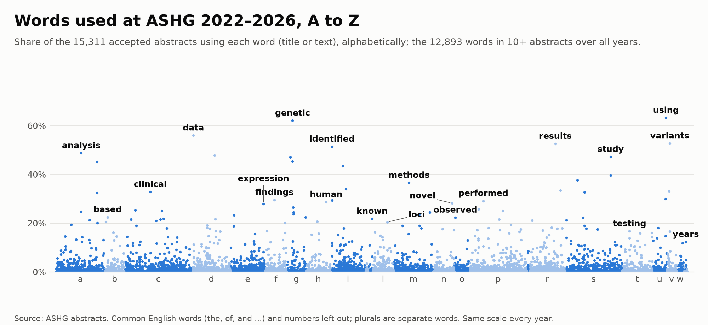
Images to download: all years · 2022 · 2023 · 2024 · 2025 · 2026


Words more common in 2026
The same words, now by how strongly each is overrepresented in 2026 abstracts compared with 2022–2025 (one-sided Fisher's exact test per word; higher is stronger). Most of the strongest are general phrasing rather than new topics: “framework” is in 27% of 2026 abstracts against 10% before, and “remains”, “incompletely”, “supporting” and “consistent” rose too. One new topic stands out: “AlphaGenome”, in 31 abstracts, none before. Hover a point for its word; click it to look it up in the table below.
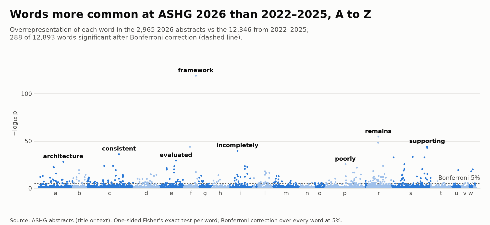
−log₁₀ p from a one-sided Fisher's exact test per word; dashed line: Bonferroni correction over every word at 5%. Image to download

| Word | 2026 abstracts | 2022–2025 abstracts | Odds ratio | p |
|---|
Every word in the figure, the most overrepresented first; scroll the table for more, click a heading to sort. Bold p: significant after Bonferroni correction. A word less common in 2026 has an odds ratio below 1 and p near 1.
Genes
How often each protein-coding gene is named, placed along the genome (hg38). APOE leads every year, with BRCA1, BRCA2 and TP53 next. Gene symbols that in abstracts mostly mean something else (MAF for minor allele frequency, HR for hazard ratio, TF for transcription factor, CAD for coronary artery disease) are left out. Hover a point for its gene; the year buttons at the top of the page switch years.
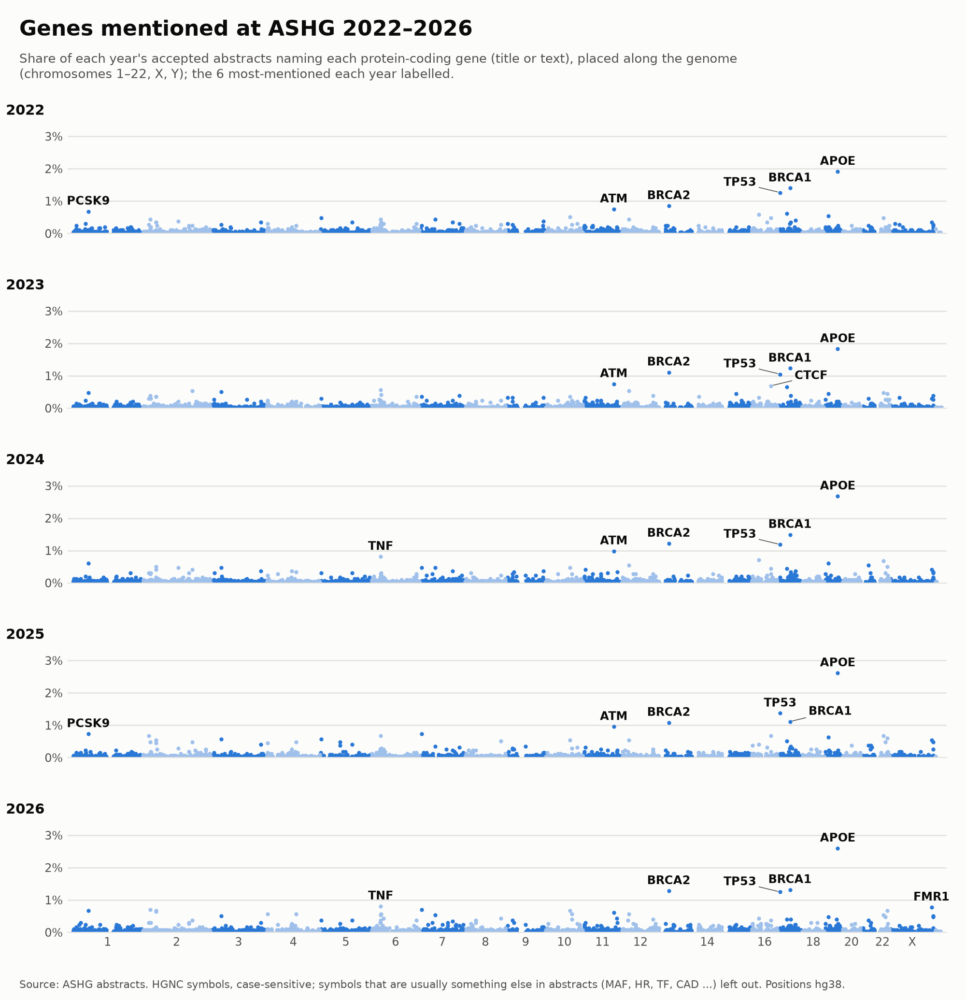
Image to download (every year, one row each)

Score your text
Paste an abstract to count how many of the 196 phrases overrepresented in ASHG talks it uses, and where that count falls among the 15,311 abstracts accepted 2022–2026.
Your text stays on your device. It is scored by this page's own script as you type; nothing is uploaded or saved. Only a rounded percentile is shown, from counts of abstracts per score.
overrepresented phrases: more than about of accepted abstracts.
That is words; abstracts run about 300–350, so a shorter text scores lower.
Phrases found
Strongest overrepresentation first; hover one for its odds ratio.
None of the phrases.
How talks and posters score
Median talk 13, median poster 9. Hover a score for its counts.
What the score is
The phrases are the 1–3-word phrases more common in talk abstracts than in poster abstracts over 2022–2026, significant after a Bonferroni correction across all 10,816 phrases tested (z ≥ 4.58). Variants of one idea found in mostly the same abstracts (“massively parallel reporter”, “MPRA”) count once. The score is how many of them a text uses, the same way for your text as for every accepted abstract.
Mostly they mark topics (functional genomics, single-cell and chromatin work, very large cohorts) and the way large studies describe their results (“largest”, “novel”, “million”), more than style.
How well it separates talks and posters
To check the score on abstracts it was not built from, the phrase list was rebuilt from 2022–2025 alone (139 phrases) and used to score the 2,965 abstracts of 2026. A random 2026 talk outscores a random 2026 poster 64% of the time (50% would be no better than a coin flip; ties count half). For comparison, ranking abstracts by length alone (how many different words they use) puts the talk ahead 57% of the time, so the phrase count reflects more than talk abstracts running a little longer.
A description, not a verdict. Talks and posters overlap heavily at every score. Accepted abstracts only, and authors can ask for a poster, so this is association, not acceptance odds. Adding phrases to an abstract will raise its score without changing the work.
All 196 phrases
Talks and posters using each phrase in their text, and its odds ratio of a talk, combined across years. Variants listed under a phrase count toward the score too.